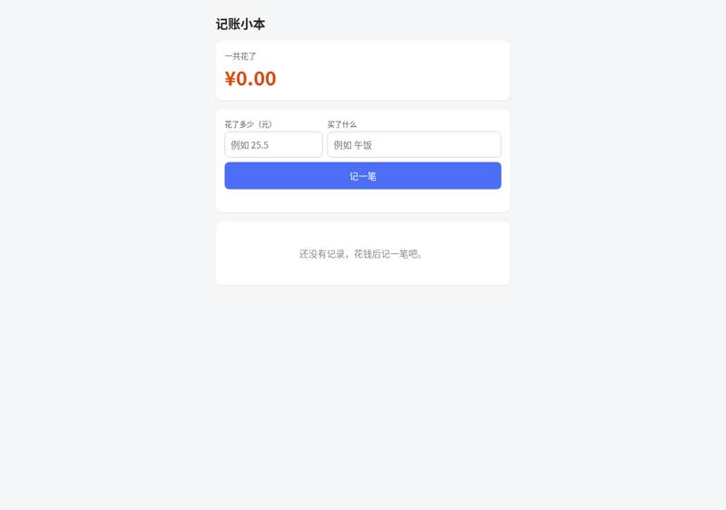
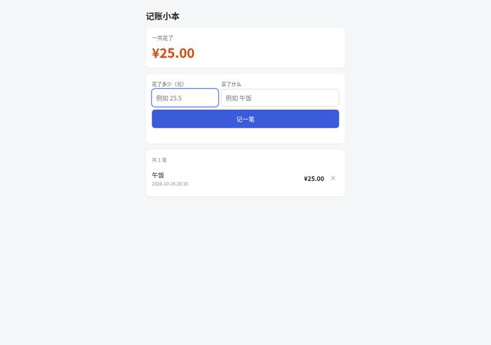
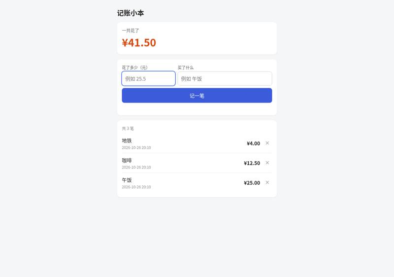
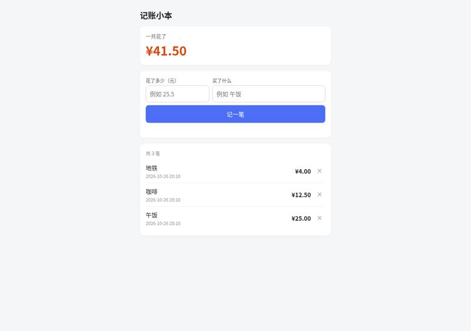
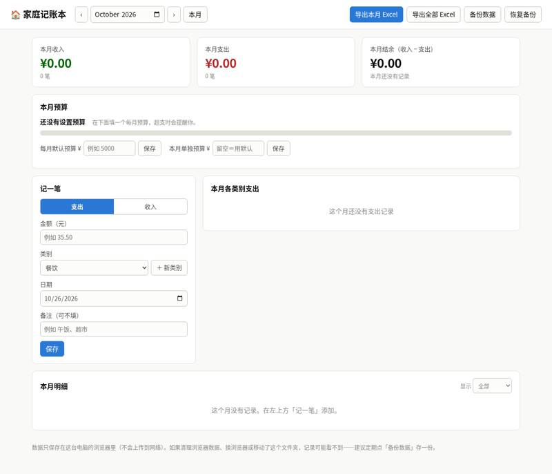
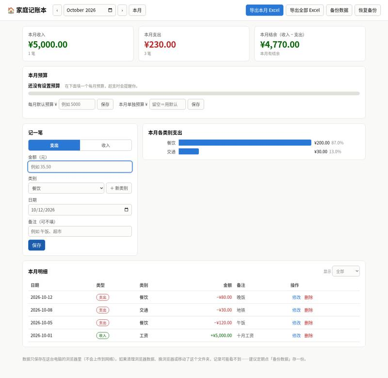
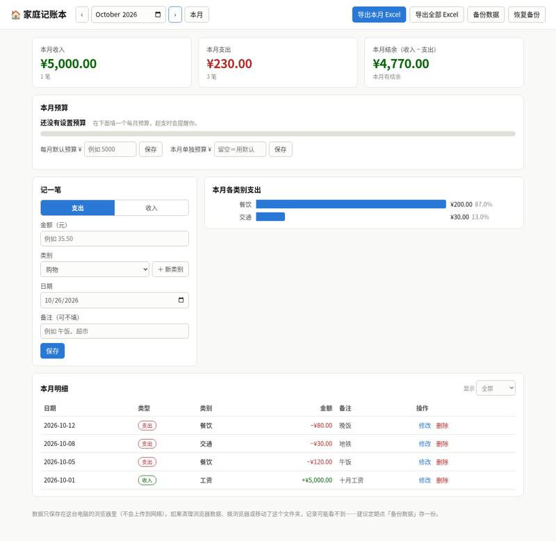
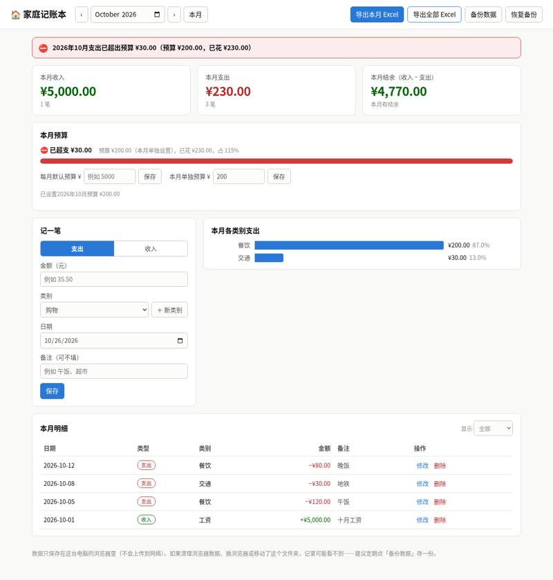
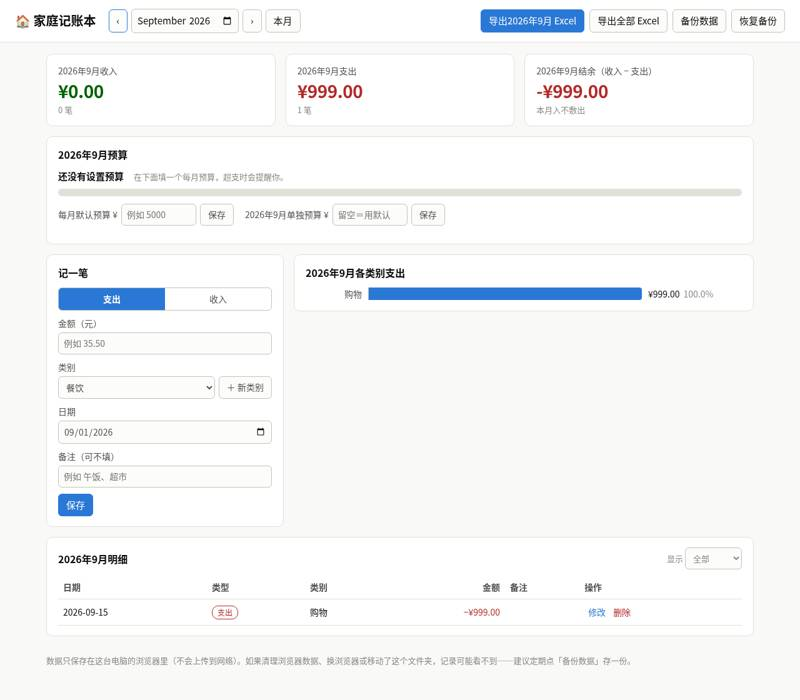

KhazP/vibe-coding-prompt-template: vibe coding test
Installed from its README in a throwaway sandbox, then used by Claude Code (Claude Opus 5.5) to build two apps from requests written the way someone who cannot code would write them. Whenever the build stopped to ask a question or for approval, it got the same reply. A separate tester session, with no tool loaded, opened each app in a browser and ran the checks; we went through every screenshot. All results · The task · The tester's checks
Install: SETUP: done installed the vibeworkflow skills into ~/work/.claude/skills and ~/work/.agents/skills, using `cd ~/src/cli && npm ci && npm run build` then `node ~/src/cli/bin/vibeworkflow.js --skills-only --tools claude --dir ~/work` (repo commit d26fb0d8a9cd)
One sentence: an expense page
The request, word for word: 帮我做一个记账小网页：每次花钱记一笔（花了多少、买了什么），页面上能看到一共花了多少，关掉浏览器再打开，记录还在。
Ran: all 4 checks passed. Opens: double-click. Built in 2.7 minutes (limit 30); it stopped to ask 0 time(s); how it ended: finished. Usage at API prices: $0.88 (5.2 times the run with no tool). Packages: none (plain HTML, CSS and JavaScript).
| Check | Verdict | What the tester saw | Screenshot |
|---|---|---|---|
| opens | pass | Double-click (file://) page shows 记账小本, 一共花了 ¥0.00, inputs 花了多少（元）/买了什么, a 记一笔 button, and 还没有记录，花钱后记一笔吧。 |  |
| records an expense | pass | After entering 25 / 午饭 and clicking 记一笔: list shows 共 1 笔, row 午饭 ¥25.00 (with time 2026-10-26 20:10); total ¥25.00 |  |
| total is right | pass | After adding 12.5 咖啡 and 4 地铁: total ¥41.50; list 共 3 笔: 地铁 ¥4.00, 咖啡 ¥12.50, 午饭 ¥25.00 |  |
| still there after closing and reopening | pass | After closing and reopening: total still ¥41.50; 共 3 笔: 地铁 ¥4.00, 咖啡 ¥12.50, 午饭 ¥25.00 |  |


Where it stopped, and got the reply 「我不懂这些，你按你推荐的来，继续做。」
- It did not stop to ask.
One paragraph: a family ledger
The request, word for word: 做一个家庭记账本网页：能记收入和支出（金额、类别、日期、备注），能按月看收入、支出和结余，能看每个类别花了多少（最好有图），可以设每月预算、超了要提醒，还能把记录导出成 Excel 表格。数据存在我电脑上就行。
Ran: all 8 checks passed. Opens: double-click. Built in 6.6 minutes (limit 45); it stopped to ask 0 time(s); how it ended: finished. Usage at API prices: $1.99 (1.9 times the run with no tool). Packages: none (plain HTML, CSS and JavaScript).
| Check | Verdict | What the tester saw | Screenshot |
|---|---|---|---|
| opens | pass | Opened file://~/work/output/index.html: the app showed title 🏠 家庭记账本, month October 2026, income/expense/balance cards at ¥0.00, budget box, 记一笔 form, 导出 Excel buttons. No console errors. |  |
| records income and expenses | pass | 本月明细 list: 本月明细 显示 全部 只看支出 只看收入 日期 类型 类别 金额 备注 操作 2026-10-12 支出 餐饮 −¥80.00 晚饭 修改删除 2026-10-08 支出 交通 −¥30.00 地铁 修改删除 2026-10-05 支出 餐饮 −¥120.00 午饭 修改删除 2026-10-01 收入 工资 +¥5,000.00 十月工资 修改删除 数据只保存在这台电脑的浏览器里（不会上传到网络）。如果清理浏览器数据、换浏览器或移动了这个文件夹，记录可能看不到——建议定期点「备份数据」存一份。 | |
| month's income, spending and balance | pass | October 2026: 本月收入 5000.0, 本月支出 230.0, 本月结余 4770.0 | |
| spending by category | pass | 本月各类别支出 horizontal bar chart with numeric labels: 餐饮 ¥200.00 (87.0%), 交通 ¥30.00 (13.0%). |  |
| switches between months | pass | Added expense 999, category 购物 (not in the default list; created with the app's own ＋ 新类别 button), date 2026-09-15. After saving, the app switched its view to September 2026 on its own. September 2026: 2026年9月收入 ¥0.00, 2026年9月支出 ¥999.00 (1 笔), 结余 -¥999.00; 明细 shows 2026-09-15 支出 购物 −¥999.00. Back to October 2026 (› button): income ¥5,000.00, expenses ¥230.00, balance ¥4,770.00. |  |
| warns over budget | pass | Set 本月单独预算 = 200 for October 2026 (there is also a 每月默认预算 field). A red banner at the top reads 「⛔ 2026年10月支出已超出预算 ¥30.00（预算 ¥200.00，已花 ¥230.00）」 and the budget box shows 「⛔ 已超支 ¥30.00 … 占 115%」 with a full red bar. | |
| exports a spreadsheet | pass | 导出全部 Excel downloaded 家庭账本-全部记录-2026-10-26.xlsx (.xlsx); amounts found: {5000: True, 120: True, 30: True, 80: True, 999: True}; rows: [['日期', '类型', '类别', '金额', '备注'], ['2026-09-15', '支出', '购物', 999], ['2026-10-01', '收入', '工资', 5000, '十月工资'], ['2026-10-05', '支出', '餐饮', 120, '午饭'], ['2026-10-08', '支出', '交通', 30, '地铁'], ['2026-10-12', '支出', '餐饮', 80, '晚饭'], ['月份', '收入', '支出', '结余', '预算'], ['2026-09', 0, 999, -999], ['2026-10', 5000, 230, 4770, 200]] |  |
| still there after closing and reopening | pass | After restart October: income 5000.0, expenses 230.0, balance 4770.0; 4 Oct records shown: True; September shows 999: True (Sept expenses 999.0) |  |


Where it stopped, and got the reply 「我不懂这些，你按你推荐的来，继续做。」
- It did not stop to ask.